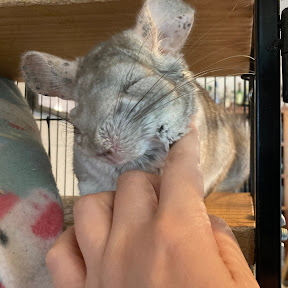
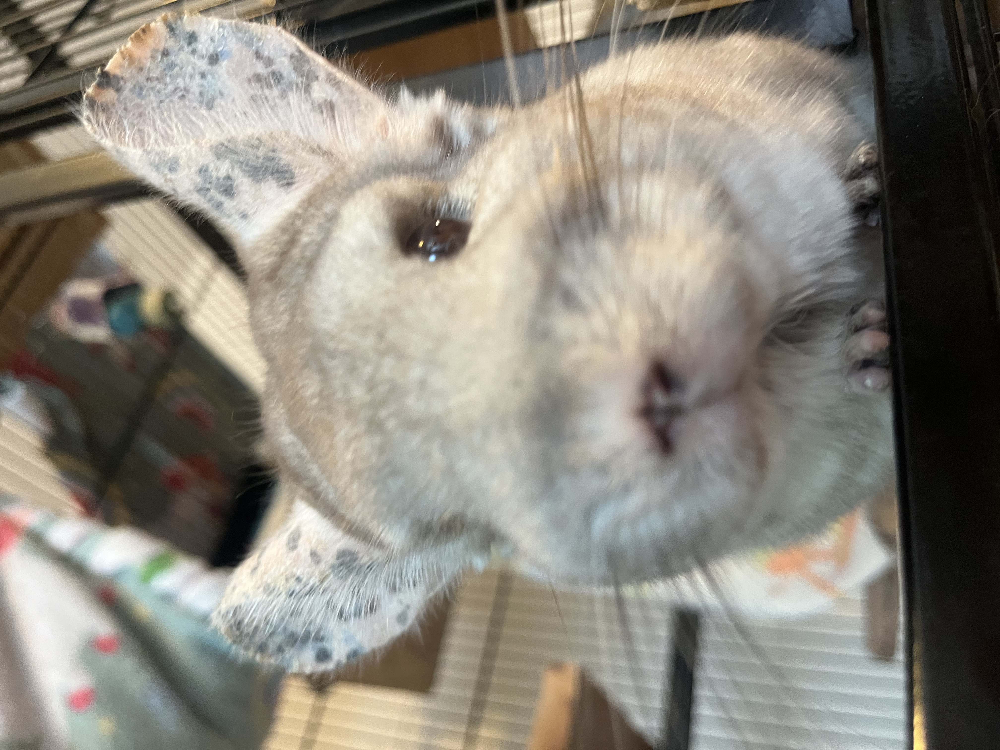
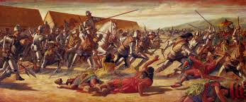
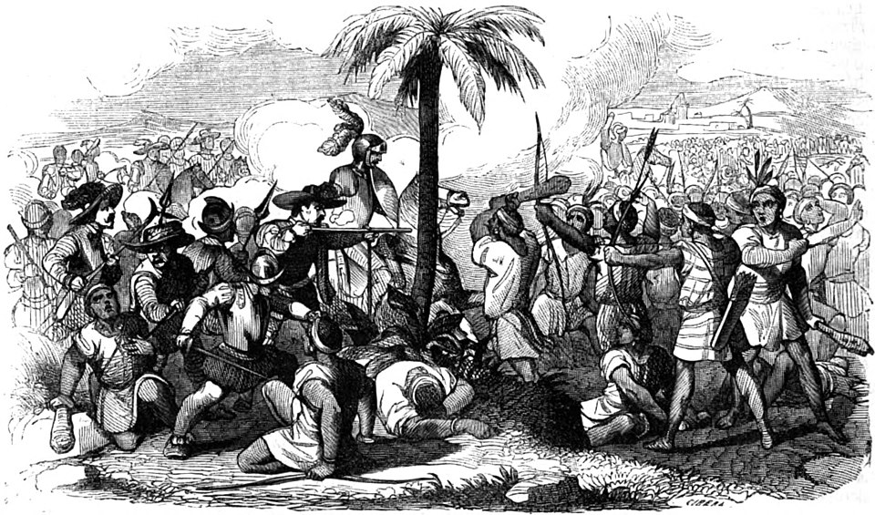
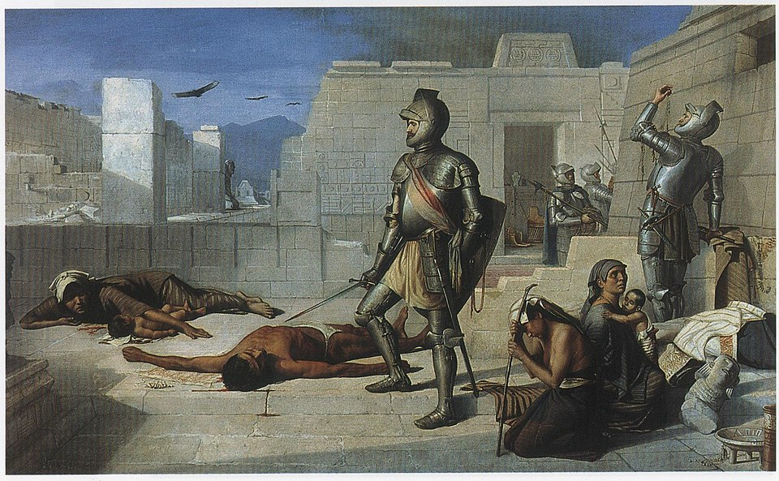
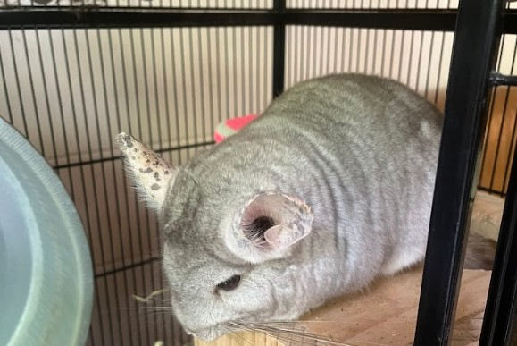

Chinchillas aren't just your everday, common rats and mice however, they are incredibly unique rodents. Chinchillas can have up to 80
hairs per hair folice (for comparison humans only have one per). Chinchillas also posses the second densest fur of ANY ANIMAL
(second to only otters).
Chinchillas come in a wide variety of shapes, sizes and even colours. Through years of selective breeding, common chinchilla colours
include beige, light grey, dark grey and white. Some "rarer" colours may include indigo, violet, purple, blue, brown and jet black
Chinchillas are also actually what are known as "crepuscular" animals. Which means that they're not quite nocturnal, and are most active between 7pm-11pm, depending on daylight hours. It is because of evolving in dark environments, that the fur on chinchillas' bellies is white, so when they want to signal to one of their herd members, they stand on their hind legs, so the other chinchillas can see the white fur in the dark.

Chinchillas have highly "unique" physical features, despite being smaller than a household tissuebox. They can run EXTREMELY fast, with the fastest recorded speed being 40kmph! Not only this but they can also jump up to six feet high, that's nearly 2 meters!
Because of this, you might assume they must be really strong and durable, right? Wrong. If you even try and hug one, their ribs will instantly shatter, that's just how frail they are. On top of this, they can't even get wet, this is due to the fact that their fur is so dense that the water simply gets trapped in their fur and will be unable to escape, eventually leading the chinchilla to get a terrible cold and eventually die. Despite this, chinchillas posses incredibly powerful bites. Capable of piercing the skin with ease and drawing blood if they wanted to. In my opinion, if a chinchilla wanted to, they could probably bite off your finger with ease. In fact, if a chinchilla was the size of a human child, they'd actually be able to bite through solid metal like a knife through jelly. Their extremely powerful biting force stemmes from their extremely powerful jaw muscles, but why are they so strong?
Well, chinchillas' front teeth never stop growing, meaning they will have to constantly chew on any objects they see to wear down their teeth, it's actually a natural instinct of them. This is also the same reason chinchillas must be kept in (LARGE) cages, so that they don't chew on wires, plastic objects and things that they can't digest, killing them. However, due to this constant chewing, they're ALWAYS excercising their jaw muscles, which is what makes an adult chinchilla's bite just so powerful.
Now, in terms of senses, chinchillas have a very poor sense of eyesight. This may lead you to beleive that they must have their other senses heightened. However, this is actually wrong. Chinchillas also have a very poor sense of hearing and smell as well. Although, they tend to make up for this with their incredibly long whiskers. Chinchillas tend to have VERY long whiskers that tend to be very spread out and around half their body length.

Despite being a seemingly unrelated and tragic event, the Spanish conquest of Peru had a major impact on chinchillas as a whole.
Somewhere in the 11th century, a kingdom of people now known as the “Chincha people”, had migrated from the highlands and had made their way into southwest Peru. There, they established a sophisticated society. They unified various tribes in the region, built a powerful state centered on agriculture and trade, and resisted threats from other regional powers, and at some point domesticated a species that are now known as Chinchillas. (though that was not their original name)

However, in 1532, everything changed. The Spanish conquested Peru. This event is now known as The Spanish conquest of the Inca Empire, and was an incredibly significant event in history. The total death count is currently unknown to this day, however it was estimated to have wiped out around 95% of the native american population. This event was DEVASTATING for the Chincha people. All of them ended up dying. Almost all of the information about this event, or even the Chincha people as a whole are currently unknown, since literally every last one of them was slaughtered, with the only remains of their culture being chinchillas. Infact, the “Chincha people” weren't even originally called that. They were named after the Chinchaysuyo Region by the Spanish colonists.

This event initially started the massive, rapid population decline of chinchillas as a species.
The "Chincha people" originally used chinchillas for their fur and meat, contrary to popular beleif, they actually partially kept chinchillas as pets. However, the Spanish had no interest in nurturing them and proceeded to begin massive, large scale unregulated hunting of the animals for their luxorious fur for personal use and trade.
Demand had hit an all time high in the European trade market, causing even higher levels of hunting to supply trade demands, MASSIVELY reducing the chinchilla population in the Andes and every other area the Europeans could get their filthy hands on.
This EXTREME hunting pressure just kept rising, rising and rising, until in the 19th century, they were forced to THE very brink of extinction, with the wild population potentially hitting double didgits.

This got so far out of hand that somewhere in the 20th century, chinchillas were officially pronounced extinct in the wild due to overhunting.
HOWEVER, shortly after, several chinchillas were found in the wild. It'd been hundreds of years since chinchillas started being hunted, and this time people seemed to have realised their mistakes. From this point onwards, chinchillas, as a species began to make a slight, yet steady comeback. As of now, almost all chinchillas are domesticated and hopefully living happily with owners that know how to take care of them. Chinchillas are currently considered "endangered" by the The International Union for Conservation of Nature simply due to their low population. However, in my opinion, they are at no risk of extinction due to being domesticated and (hopefully) kept in isolated environments by their owners.